정보통신산업기사 (2006-05-14 기출문제)
1과목: 디지털전자회로
1. 10진수 25를 2진수로 옳게 나타낸 것은?
- 10001
- 11001
- 10101
- 11000
(정답률: 알수없음)

2. 다음 중 시미트 트리거 회로와 가장 관련 없는 것은?
- 전압비교회로
- 구형파회로
- 쌍안정회로
- 증폭회로
(정답률: 알수없음)
3. 그림과 같은 다이오드 클리핑 회로에 정현파를 인가했을 때 출력전압 파형은?
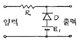
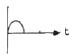
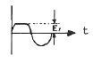
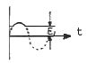
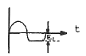
(정답률: 알수없음)
4. 이미터접지 증폭회로에서 컬렉터 전류 lc는?
- Ic=βIB+(1+β)Ico
- Ic=βIE+(1+β)Ico
- Ic=αIE+(1-β)Ico
- Ic=αIB+(1-β)Ico
(정답률: 알수없음)
5. 다음과 같은 논리회로의 출력은?
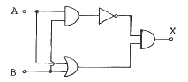
- X = A + B
- X = A · B
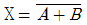
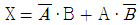
(정답률: 알수없음)
6. 그림의 회로에서 Rf 가 증가하고 5[%], Ri 가 5[%] 감소되었다면 전압 증폭율은 대략 몇 [%] 변동되는가?
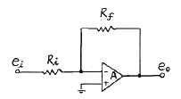
- 30[%]
- 25[%]
- 20[%]
- 10[%]
(정답률: 알수없음)
7. 정논리회로에서 다음 트랜지스터 회로의 기능은?
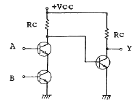
- OR 회로
- AND 회로
- NAND 회로
- EOR 회로
(정답률: 알수없음)
8. 다음 중 통신용 송신기의 주발진기 및 수신기의 국부발진기 등에 가장 많이 응용되는 발진회로는?
- 자려 발진회로
- CR 발진회로
- LC 발진회로
- 수정 발진회로
(정답률: 알수없음)
9. 다음 회로의 제너 다이오드에 흐르는 전류 Iz[mA]는? (단, 제너 다이오드의 제너 전압은 10[V]이다.)
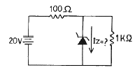
- 60
- 70
- 80
- 90
(정답률: 알수없음)
10. 트랜지스터를 증폭작용에 이용할 경우의 동작상태는?
- 포화상태
- 활성상태
- 차단상태
- 역활성상태
(정답률: 알수없음)
11. 신호의 표본값에 따라 펄스의 진폭은 일정하고 그 위상만 변화하는 것은?
- PCM
- PPM
- PWM
- PFM
(정답률: 알수없음)
12. 푸시풀 트랜지스터 전력 증폭기에서 바이어스를 완전 B급으로 하지 않는 이유는?
- 효율을 높이기 위해
- 출력을 크게 하기 위해
- 안정된 동작을 위해
- crossover 왜곡을 줄이기 위해
(정답률: 알수없음)
13. 10진수 8을 3초과코드(excess-3 code)로 변환 하면?
- 1000
- 1001
- 1011
- 1111
(정답률: 알수없음)
14. 저항 R1, R2 및 인덕턴스 L의 직렬 회로가 있다. 이 회로의 시정수는?
- (R1-R2)/L
- (R1+R2)/L
- L/(R1-R2)
- L/(R1+R2)
(정답률: 알수없음)
15. 다음에 열거하는 회로 중에서 플립플롭을 이용하여 구성하는 회로 가 아닌 것은?
- 시프트 레지스터
- 카운터
- 분주기
- 전가산기
(정답률: 알수없음)
16. 반송파의 진폭이 10[V], 변조도가 50[%]인 진폭 피변조파를 검파 효율 80[%]의 직선검파 회로의 입력에 가하였을 때 부하저항에 나타나는 신호의 진폭은?
- 2[V]
- 4[V]
- 6[V]
- 8[V]
(정답률: 알수없음)
17. 다음 카르노(Karnaugh)도의 함수를 최소화 하면?
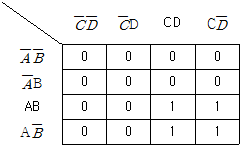
- AB
- AC
- AD
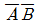
(정답률: 알수없음)
18. LC 동조 발진기에 비해 수정 발진기의 특징으로 잘못 설명한 것 은?
- 안정도가 높다
- Q가 크다
- 발진 주파수를 가변하기가 곤란하다.
- 저주파 발진기로 적합하다.
(정답률: 알수없음)
19. 다음의 연산회로는 어느 회로인가?
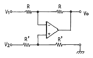
- 부호변환회로
- 미분회로
- 적분회로
- 감산회로
(정답률: 알수없음)
20. 다음은 반 가산기(half adder)회로이다. X, Y에 각각 어떤 게이트 회로가 사용되어야 하는가?
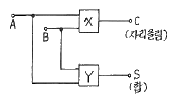
- X : AND, Y : 배타적 OR
- X : 배타적 OR, Y : AND
- X : OR, Y : 배타적 ORF
- X : 배타적 OR, Y : OR
(정답률: 알수없음)
2과목: 정보통신기기
21. 다음 중 동축 CATV에 비하여 광 CATV의 특징은?
- 취급 및 분기가 용이함
- 시설비가 상대적으로 매우 저렴함
- 무중계 장거리 전송이 가능함
- 동시 다채널 전송이 어려움
(정답률: 알수없음)
22. 종이에 기록된 문자를 직접 광학적으로 읽어내는 광학식 문자 읽기 장치는?
- 디지타이저
- OCR
- CAD/CAM
- 그래픽 단말기
(정답률: 알수없음)
23. 다음 중 HDTV 화면의 종횡비는?
- 4 : 3
- 3 : 4
- 16 : 9
- 9 : 19
(정답률: 알수없음)
24. 문자나 도형을 입력하기 위하여 평면 모양으로 구성된 입력면내를 지시 팬으로 지시함으로써 그 위치 정보를 입력할 수 있는 단말 장치는?
- 타블렛
- 플로터
- 조이스틱
- 마우스
(정답률: 알수없음)
25. 전전자식 교환기에서 중계선 정합회로의 기능에 대해 맞게 설명한 것은?
- B(battery feel) : 통화전류공급
- G(generation of frame code) : 프레임 코드의 발생
- H(hybrid) : 2선/4선 변환
- R(ringing) : 링 신호 공급
(정답률: 알수없음)
26. 다음 중 전자파의 기본적인 성질이 아닌 것은?
- 동일 매질에서 전파하는 전자파는 직진한다.
- 전자파는 주파수가 높을수록 회절현상이 심하다.
- 전자파는 다른 매질의 경계면에서 굴절한다.
- 전자파의 전파속도는 유전율이 적을수록 빨라진다.
(정답률: 알수없음)
27. 몇 개의 터미널들이 하나의 통신회선을 통하여 결합된 형태로 신호를 전송하고 이를 수신측에서 다시 몇 개의 터미널의 신호로 분리하여 컴퓨터에 입력할 수 있도록 하는 것은?
- 디지털서비스유니트(DSU)
- 변복조기(MODEM)
- 채널서비스유니트(CSU)
- 다중화장비(Multiplexer)
(정답률: 알수없음)
28. 데이터 전송 중에 발생하는 에러를 검출하고 정정하는 기능을 갖는 장치는?
- 산술연산장치
- 전송제어장치
- 통신저장장치
- 중앙처리장치
(정답률: 알수없음)
29. 종합정보통신망(ISDN)에서 공통신호방식의 장점은?
- 저속신호의 전송에 적당하다.
- 단방향 신호전송특성이 우수하다.
- 음성통신과 신호를 분리하여 신호가 독립적으로 동작한다.
- 선호이용율과 다중으로 신호를 전송하는데 최적이다.
(정답률: 알수없음)
30. CCTV의 기본 구성이 아닌 것은?
- 촬상계
- 전송계
- 수상계
- 교환계
(정답률: 알수없음)
31. 다음 중 디지털 전송회선에서 장거리 전송을 위해 컴퓨터나 단말장치의 단극성 신호를 양극성 신호로 변환하고 수신측에서는 이 과정을 역으로 수행하는 장치는?
- DSU
- MUX
- MODEM
- Coupler
(정답률: 알수없음)
32. 디지털 신호를 아날로그 전송회선에 전송 가능하도록 변환시켜 주는 변환기는?
- DSU(Digital service Unit)
- DCE(Data Circuit Terminal Equipment)
- CSU(Channel Service Unit)
- MODEM(modulator & Demodulator)
(정답률: 알수없음)
33. 정지 및 이동 중에도 언제 어디서나 고속으로 무선 인터넷 접속이 가능한 휴대 인터넷 서비스를 무엇이라 하는가?
- WiBro
- WCDMA
- VOIP
- RFID
(정답률: 알수없음)
34. 다음의 지구국용 위성통신 안테나에 대한 설명으로 옳지 않은 것은?
- 위성으로부터의 미약한 전파를 수신해야 한다.
- 고이득, 저잡음 및 지향특성이 우수해야 한다.
- 대역폭과 전파손실을 줄이기 위해 단파로 통신한다.
- 국제통신용은 카세그레인 안테나가 사용된다.
(정답률: 알수없음)
35. 다음 중 DTE/DCE 접속규격의 접속특성이 아닌 것은?
- 기계적 특성
- 전기적 특성
- 자기적 특성
- 기능적 특성
(정답률: 알수없음)
36. 다음 중 텔레텍스트를 가장 잘 설명한 것은?
- 방송형태의 정보를 제공하는 서비스로 문자 다중 방송이라 한다.
- 시스템은 정보 제공자, 정보 수용자, 정보 가공, 정보의 예약ㆍ확인으로 구성된다.
- 필요한 정보를 전화와 모니터로 받아본다.
- 정보 수요자 모두가 정보 제공자가 될 수도 있다.
(정답률: 알수없음)
37. SSB 변조 방식이 DSB 변조방식에 대해 장점이 아닌 것은?
- 주파수 효율이 높다.
- 선택성 페이딩의 영향을 덜 받는다.
- 비화성이 없다.
- 소비전력이 적다.
(정답률: 알수없음)
38. 코드분할 다원 접속인 CDMA의 장점이 아닌 것은?
- 페이딩과 간섭에 강한 특성을 보인다.
- 보안성이 높아 도청하기 어렵다.
- 소프트 통화 채널 전환이 가능하다.
- 주파수 사용효율이 낮다.
(정답률: 알수없음)
39. 다음 중 포트 공동이용기의 설명이 잘못된 것은?
- 풀/셀렉트 프로토콜을 이용 할 수 있다.
- 컴퓨터와 단말기를 같은 장소에 설치해야 한다.
- 변복조기 공동이용기와 선로 공동이용기의 대체장비로 사용이 가능하다.
- 호스트컴퓨터와 변복조기 사이에 설치한다.
(정답률: 알수없음)
40. 멀티미디어에 대한 설명 중 옳지 않은 것은?
- 하드웨어 기술뿐만 아니라 소프트웨어 기술도 중요시 된다.
- 쌍방향 통신 기능이 가능하여 정보접근이 용이하다.
- 청각에 호소하던 기능에 시각에 호소하는 기능을 부가하고 있다.
- 마이크로일렉트로닉스 소자를 이용한 아날로그 기술로 지향하고 있다.
(정답률: 알수없음)
3과목: 정보전송개론
41. 상호변조왜곡(intermodulation distortion)의 방지대책으로 적절하지 않은 것은?
- 다중화 방식을 TDM에서 FDM으로 변경한다.
- 필터를 이용하여 통과대역 밖의 신호를 잘라낸다.
- 입력신호의 크기를 너무 크게 하지 않는다.
- 송수신기장치 및 전송매체를 선형영역에서 동작시킨다.
(정답률: 알수없음)
42. ARQ(Atomatic Repeat Rquest) 방식에 대한 설명 중 가장 적합한 것은?
- 에러가 발생한 프레임(블록)을 검출 후 재전송
- 에러가 발생한 프레임(블록)을 검출
- 에러가 발생한 프레임(블록)을 정정
- 부호로 전송하는 방식
(정답률: 알수없음)
43. 연속적인 신호파형에서 최고 주파수가 W[Hz]일 때 나이퀴스트(Nyquist) 표본화 간격(주기)은?
- 1/2W
- 2W
- 1/W
- W
(정답률: 알수없음)
44. PCM 전송방식에서 4[KHz] 가량의 대역폭을 갖는 음성 정보를 8[bit] 코딩(coding)으로 표본화한다면 음성을 전송하기 위한 데이터 전송률은?
- 16[Kbps]
- 32[Kbps]
- 64[Kbps]
- 128[Kbps]
(정답률: 알수없음)
45. 광섬유의 재료 자체(불선물)에 흡수되어 열로 변환됨으로써 발생하는 손실을 무엇이라 하는가?
- 흡수손실
- 결합손실
- 산란손실
- 마이크로밴딩손실
(정답률: 알수없음)
46. 통신회선이 전용회선일 경우 데이터링크의 전송제어 절차 단계를 옳게 나타낸 것은?
- 회선연결 → 데이터링크 설정 → 데이터전송 → 데이터링크 종료 → 회선절단
- 데이터링크 설정 → 회선연결 → 데이터전송 → 데이터링크 종료 → 회선절단
- 데이터링크 설정 → 회선연결 → 데이터전송 → 회선절단 → 데이터링크 종료
- 회선연결 → 데이터전송 → 데이터링크 설정 → 데이터링크 종료 → 회선절단
(정답률: 알수없음)
47. 전송효율을 최대로 하기 위해서 프레임의 길이를 동적으로 변경 시킬 수 있는 ARQ 방식은?
- 정지-대기 ARQ
- Go-Back-N ARQ
- Selective-repeat ARQ
- Adaptive ARQ
(정답률: 알수없음)
48. 디지털 신호의 펄스열을 그대로 또는 다른 형식의 펄스 파형으로 변환시켜 전송하는 방식은?
- 베이스밴드 전송방식
- 반송대역 전송방식
- 광대역 전송방식
- 협대역 전송방식
(정답률: 알수없음)
49. 다음 중 HDLC의 특징이 아닌 것은?
- Start-Stop 방식에 비해 전송효율이 향상된다.
- Start-Stop 방식에 비해 신뢰성이 높다.
- 문자동기방식이다.
- 비트의 투명성이 있다.
(정답률: 알수없음)
50. 동측 케이블에서 반사 현상이 생기는 주요 원인으로 가장 타당한 것은?
- 케이블 접속점에 임피던스 불균등점이 발생한 경우
- 내ㆍ외부 도체 간의 절연체로 폴리에틸렌을 사용한 경우
- 케이블의 외부도체를 철 테이프로 감았을 때
- 케이블의 외부피복을 코팅처리 하였을 때
(정답률: 알수없음)
51. LAN에서 사용하는 UTP케이블 등급 중 100Mbps의 통신 속도를 제공해주는 것은?
- Category 2
- Category 3
- Category 4
- Category 5
(정답률: 알수없음)
52. 4상 PSK에서 변조속도가 1200보오(baud)일 때 데이터 신호속도는?
- 1,200[bps]
- 2,400[bps]
- 4,800[bps]
- 6,400[bps]
(정답률: 알수없음)
53. 해밍 거리(Hamming distance)가 7일 때 정정할 수 있는 에러 개수는?
- 1
- 2
- 3
- 4
(정답률: 알수없음)
54. ISO의 OSI 7계층 중 5번째 계층은?
- 세션계층
- 표현계층
- 응용계층
- 데이터링크계층
(정답률: 알수없음)
55. 전송선로의 임피던스 정합조건을 바르게 설명한 것은?
- 임피던스의 크기는 같고 위상도 같아야 한다.
- 임피던스의 크기는 같고 위상은 반대이어야 한다.
- 임피던스 크기는 다르고 위상이 같아야 한다.
- 임피던스 크기가 다르고 위상도 반대이어야 한다.
(정답률: 알수없음)
56. 다중모드 광섬유의 설명으로 틀린 것은?
- 코어 내를 전파하는 모드가 여러 개이다.
- 모드와 모드 사이에 간섭이 있다.
- 단일모드 광섬유에 비해 고속ㆍ대용량 전송에 사용한다.
- 코어의 직경이 커서 단일모드 광섬유에 비해 접속이 쉽다.
(정답률: 알수없음)
57. 다음 중 PLL(Phase Locked Loop)의 구성요소가 아닌 것은?
- 위상 비교기(Phase Comparator)
- 진폭 비교기(Amplitude Comparator)
- 루프 여과기(Loop Filter)
- 전압제어 발진기(Voltage Controlled Oscillator)
(정답률: 알수없음)
58. 백색잡음(white noise)에 가장 근사한 잡음은?
- 험잡음
- 플리커 잡음
- 유색잡음
- 열잡음
(정답률: 알수없음)
59. 다음 그림의 전송부호 형식은?
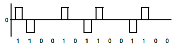
- 단극 방식
- 복극 NRZ 방식
- 복극 RZ 방식
- 바이폴라 방식
(정답률: 알수없음)
60. 다음 중 PCM방식의 계통도를 올바르게 나타낸 것은?
- 표본화-양자화-복호화-재생중계-부호화-필터링
- 표본화-부호와-양자화-재생중계-필터링-복호화
- 표본화-양자화-부호화-재생중계-복호화-필터링
- 표본화-부호화-필터링-재생중계-양자화-복호화
(정답률: 알수없음)
4과목: 전자계산기일반 및 정보설비기준
61. 자기보수(self-complementary)기능을 갖는 코드는?
- 3초과 코드
- 해밍 코드
- 그레이 코드
- ASCII 코드
(정답률: 알수없음)
62. 컴퓨터 시스템 내부에서 순간순간의 상태를 기억하고 있는 것을 무엇이라 하는가?
- interrupt
- PSW
- CCW
- SVC
(정답률: 알수없음)
63. 다음 중 OS의 종류가 아닌 것은?
- Linux
- UNIX
- Window XP
- JCL
(정답률: 알수없음)
64. 중앙처리장치의 동작속도에 가장 큰 영향을 미치는 것은?
- 주소버스의 종류
- 명령의 구성형식 및 종류
- 레지스터의 비트 구성방법
- 중앙처리장치의 클럽주파수
(정답률: 알수없음)
65. 중앙처리장치로부터 발생되는 기억장치의 읽기 신호와 쓰기 신호를 이용하여 입출력장치에 대한 읽기와 쓰기를 수행할 수 있는 방식은?
- Interrupt I/O
- Channel I/O
- Programmed I/O
- Memory Mapped I/O
(정답률: 알수없음)
66. 그림에서 출력 X를 입력 A, B의 함수로 바르게 표시한 것은?
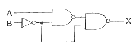
- X = AB
- X = A+B
- X = A'B + AB'
- X = AB + A'B'
(정답률: 알수없음)
67. 10진수 12의 gray code는 어느 것인가?
- 1111
- 1010
- 1101
- 1000
(정답률: 알수없음)
68. 좋은 프로그램의 기준과 관계없는 것은?
- 문제를 의도한 대로 해결하는 것
- 신뢰성이 높은 것
- 가능한 기계어로 작성한 것
- 해동과 관리가 쉬운 것
(정답률: 알수없음)
69. 다음 중 컴퓨터의 특징이 아닌 것은?
- 처리가 신속 정확하다.
- 자동처리 능력이 없다.
- 다량의 기억능력이 있다.
- 논리판단 및 비교기능이 있다.
(정답률: 알수없음)
70. 오퍼랜드 부분에 연상에 필요한 숫자 데이터를 직접 넣어 주는 주소지정방식으로 명령어 자신이 데이터를 직접 포함하고 있어 명령어의 실행이 바로 이루어지며, 데이터를 구하기 위해 메모리를 액세스할 필요가 없다. 그러나 사용할 수 있는 수의 크기가 오퍼랜드 필드의 크기로 제한되는 이 방식은 무엇인가?
- 직접 주소 지정 방식 (Direct Addressing mode)
- 함축 주소 지정 방식 (Implied Addressing mode)
- 레지스터 주소 지정 방식(Register Addressing mode)
- 즉시 주소 지정 방식 (Immediate Addressing mode)
(정답률: 알수없음)
71. 정보화촉진 등에 관한 사항을 심의하기 위하여 국무총리 소속하에 설치한 기관은?
- 통신위원회
- 정보통신진흥위원회
- 통신정책위원회
- 정보화추진위원회
(정답률: 알수없음)
72. 정보통신 단말기로부터 전화급 회선으로 송출하는 전력의 최대치는 몇[mW]인가?
- 1
- 2
- 3
- 4
(정답률: 알수없음)
73. 전기통신설비가 다른 사람의 전기통신설비와 접속되는 경우에 그 건설과 보전에 관한 책임 등의 한계를 명확하게 하기 위하여 설정한 것은?
- 접속점
- 분계점
- 통신규약
- 안전대책
(정답률: 알수없음)
74. 다음 중 통신센터(전산실)의 환경조건으로 가장 적합한 온도는?
- 16℃ ~ 28℃
- 26℃ ~ 38℃
- 6℃ ~ 18℃
- 10℃ ~ 20℃
(정답률: 알수없음)
75. 정보통신설비의 운용보수요원의 작업 중 예방운용 보전작업이 아닌 것은?
- 고장접수 및 시험
- 회선의 감시 및 점검
- 각종 기기 점검
- 예비품의 점검 관리
(정답률: 알수없음)
76. 정보통신부장관이 행하는 기술지도 방법이 아닌 것은?
- 기술 전수
- 기술정보의 제공
- 소프트웨어의 제공
- 전기통신기자재의 품질보증에 관한 지도
(정답률: 알수없음)
77. 정보통신설비 시설공사에서 하도급의 원칙에 관한 규정이 아닌 것은?
- 일괄하도급 금지
- 하도급 공사는 연대책임
- 재하도급 금지
- 일부하도급시 사전구두 승인
(정답률: 알수없음)
78. 기간통신사업자 및 부가통신사업자의 교환설비로부터 이용자 전기통신 설비의 최초단자에 이르기까지의 사이에 구성되는 회선의 의미를 갖는 용어는?
- 국선
- 내선
- 교환시설
- 선로설비
(정답률: 알수없음)
79. 다음 ( )안에 알맞은 말은?
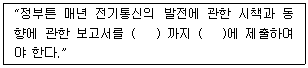
- 임시국회 개회전, 국무회의
- 정기국회 개회전, 국회
- 정기국회 회기중, 국회의원
- 임시국회 개회중, 국회
(정답률: 알수없음)
80. 다음 중 전기통신의 표준화에 관한 업무를 효율적으로 추진하기 위하여 설립한 기구는?
- 한국정보통신기술협회
- 한국정보통신진흥협회
- 한국전자통신연구원
- 한국정보통신공사협회
(정답률: 알수없음)